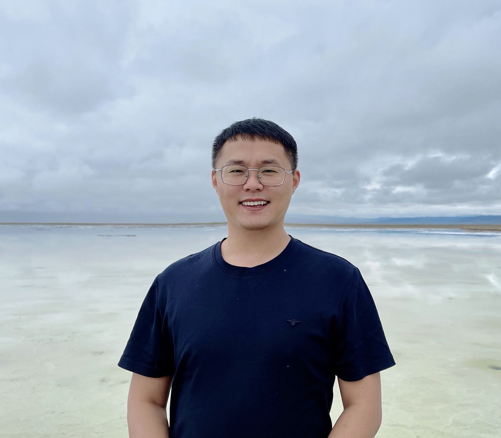

Jianwei Guo (郭建伟)
Brief Bio

I am a Professor at School of Artificial Intelligence, Beijing Normal University. Previously, I was an Associate Professor at State Key Laboratory of Multimodal Artificial Intelligence Systems, Institute of Automation, Chinese Academy of Sciences (CASIA). I also earned my Ph.D in computer science in 2016 from NLPR, CASIA, advised by Prof. Xiaopeng Zhang and Prof. Dong-Ming Yan.
I received my bachelor degree from Shandong University in 2011. From Apr. 2014 to Feb. 2015, I was a Visiting Scholar PhD Student at Visual Computing Research Center, SIAT. From Apr. 2015 to Feb. 2016, I visited the Computer Graphics and Media Design Group at University of Konstanz, directed by Prof. Oliver Deussen.
Research Interests
Computer graphics and 3D computer vision, including geometric modeling, 3D shape analysis and geometry learning.
Professional Activities
Editorial Board:
The Visual Computer (IF: 3.5), Associate Editor (2023 - )
IET Image Processing (IF: 2.3), Associate Editor (2022 - )
Visual Computing for Industry, Biomedicine, and Art (IF: 2.8), Youth Editor (2022 - )
Program Committee:
SIGGRAPH Asia 2024 Courses, GMP 2021/2023/2024, SMI 2023/2024, CGI 2023, CVM 2023, AAAI 2022, CASA 2022-2024, Chinagraph 2022/2024, IEEE CAD/Graphics 2019/2021/2023, CAD&CG 2020/2021/2023, ChinaVR 2021, GDC 2020/2022/2023
Reviewer for journals:
TOG, TPAMI, TVCG, CGF, CAD, TMM, TCSVT, CAGD, C&G, TVCJ, CVIU, Graphical Models, etc.
Reviewer for conferences:
Siggraph, Siggraph Asia, Eurographics, ICCV, ECCV, Pacific Graphics, SGP, GMP, ICRA, High-Performance Graphics, CAD/Graphics, etc.
Students
Current:
Pu Li (Ph.D.@CASIA, 2021.9 - now)
Jianing Hou (M.S.@UCAS, 2022.04 - now)
Qi Zeng (M.S.@UCAS, 2023.09 - now)
Pengxu Li (M.S.@UCAS, 2024.09 - now)
Alumni:
Haobo Qin (M.S.@UCAS, 2021.9-2024.7， Next: Tencent)
Huibin Li (M.S.@UCAS, 2021.9-2024.7， Next: Ph.D.@University of Waterloo, Canada)
Yanchao Liu (Ph.D.@UCAS, 2018.9-2023.7， Next: Postdoc@Tsinghua University)
Chao Liu (M.S.@UCAS, 2020.9-2023.7, Next: Ph.D.@Singapore University of Technology and Design)
Haoyu Liu (M.S.@UCAS, 2020.9-2023.7, Next: Ph.D.@Beihang University)
Zhongqi Wu (Ph.D.@UCAS, 2019.9-2022.7, Next: Postdoc@CAS)
Xuejun Xing (M.S.@UCAS, 2019.9-2022.7, Next: Ph.D.@UCAS)
Zhengda Lu (Ph.D.@UCAS, 2018.9-2021.6, Next: Postdoc@UCAS)
Long Zhang (Ph.D.@UCAS, 2018.9-2021.6, Next: Company)
Mingxin Yang (M.S.@CASIA, 2018.9-2021.6, Next: Ph.D.@SIAT, CAS)
Lei Yi (B.S@Beijing Forestry Univ., 2016, Next: M.S.@University of Pennsylvania, USA)
Hanyu Wang (B.S@Xi’an Jiaotong Univ., 2017.7-2018.6, Next: M.S.@University of Maryland-College Park, USA)
Contact Information
Address:
Room 510, School of Artificial Intelligence, Changping Campus, Beijing Normal University
Email:
jianwei DOT guo AT bnu DOT edu DOT cn
Follow me:
{% include elsewhere.html %}